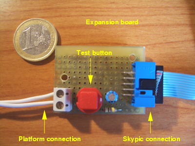
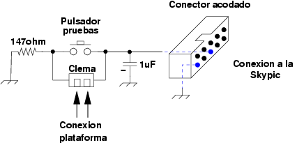
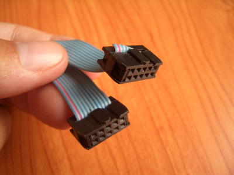
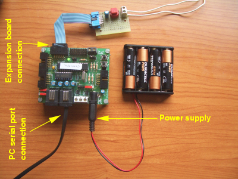

|
Prototipo 1. Tarjeta Chronopic 1.0 [Proyecto Chronojump] |
Para la construcción del primero prototipo de Chronopic se ha utilizado la tarjeta Skypic, que es hardware libre. Todos los esquemas están disponibles. Se ha conectado una placa de expansión y se ha creado el firmware para que funcione.
|
|
La placa de expansión incluye un circuito antirrebotes, un pulsador de pruebas, una clema para la conexión de la plataforma y un conector acodado de 10 pines para la conexión a la Skypic. Se conecta mediante un cable plano de bus al puerto B de la Skypic (conector CT2).
La señal que viene de la plataforma se conecta al Bit 4 (RB4) del puerto B del PIC16F876A. El esquema se muestra en la figura de la derecha y el aspecto de la placa, una vez montada en la foto de la izquierda:
|
 |
 |
El conector acodado tiene 10 pines, pero sólo se utilizan los dos que están marcados en azul. Uno es la masa (GND) y el otro es el pin RB4 del PIC16F87A.
Lista de componentes:
Una resistencia de 147 ohmios y ¼ W
Un pulsador
Una clema para circuito impreso, con dos bornas
Un condensador electrolítico de 1 microfaradio
Un conector acodado de 5x2 pines (dos filas de 5 pines)
Un cable plano de bus montado, como se muestra en la siguiente foto:
|
 |
Conseguir una tarjeta skypic. Las opciones que hay son:
Comprar una skypic ya montada y funcionando. Es una tarjeta libre que está comercializada por la empresa Ifara Tecnologías. Consultar la web de la Skypic para tener más detalles.
Comprar sólo el PCB de la skypic. Esta opción es mucho más barata. El usuario tendrá que buscar los componentes y soldarlos él mismo.
Fabricarse una Skypic. Es una tarjeta libre por lo que están todos los esquemas disponibles. Se puede optar por hacerse un PCB casero y soldar los componentes o hacerse la placa tirando cables.
Montar la tarjeta de expansión, utilizando la información del apartado anterior.
Tiempo estimado: Si ya se dispone de la Skypic y de los componentes necesario para el montaje de la placa de expansión, el tiempo estimado de construcción y puesta en marcha es de 1 hora.
|
IMPORTANTE: El cristal de la tarjeta Skypic debe ser de 4Mhz. (Existen versiones con uno de 20Mhz. Si es nuestro caso, habrá que quitarlo y soldar uno de 4Mhz. No hay que cambiar ningún otro componente). |
La configuración de los jumpers de la skypic para funcionar como una chronopic se muestran en la siguiente foto (hacer click para agrandarla y verlo con más detalle)
El conexionado se muestra en la siguiente foto. Se utilizan 4 pilas AA para la alimentación. La placa de expansión se conecta al conector CT2 de la Skypic y el cable serie al conector RJ11 que se indica.
|
 |
22/Mayo/2006: Cambiados los enlaces para apuntar a la nueva versión de Chronojump albergada en los servidores de Gnome
31/Agosto/2005: Publicada primera versión de esta página
{kind=link}